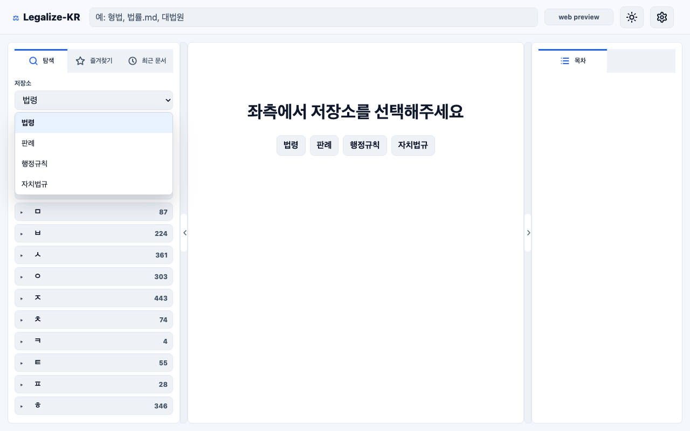
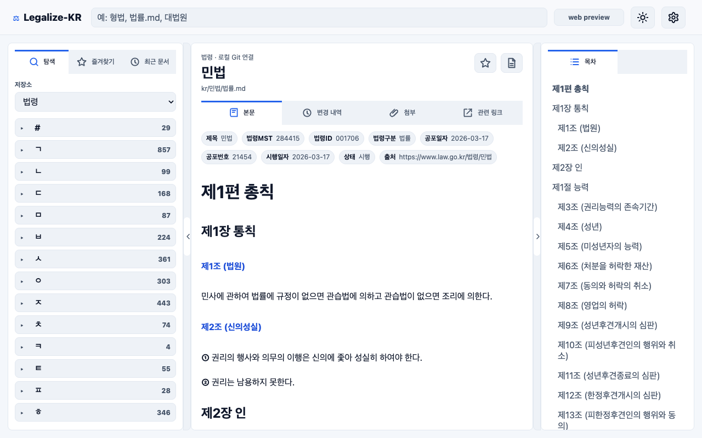
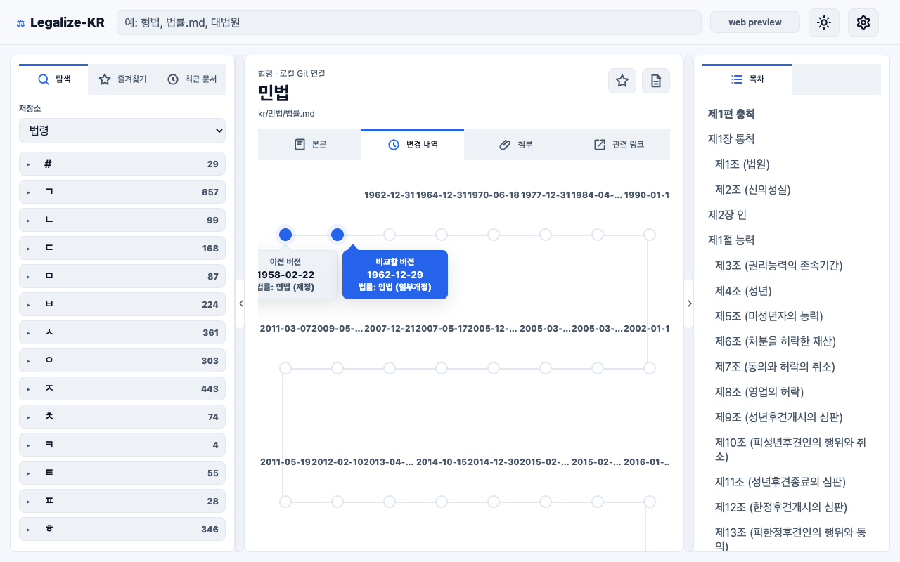
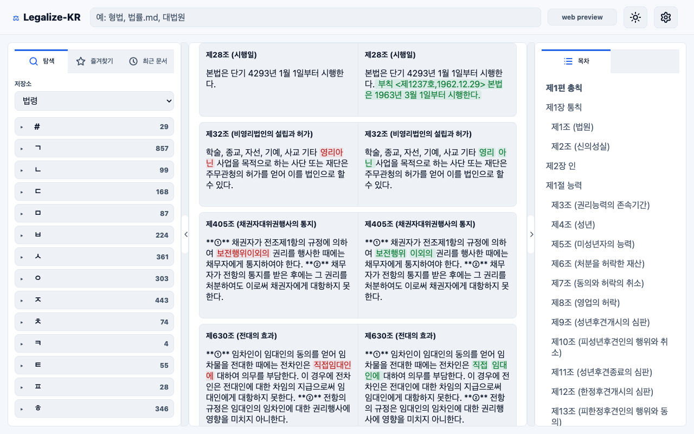
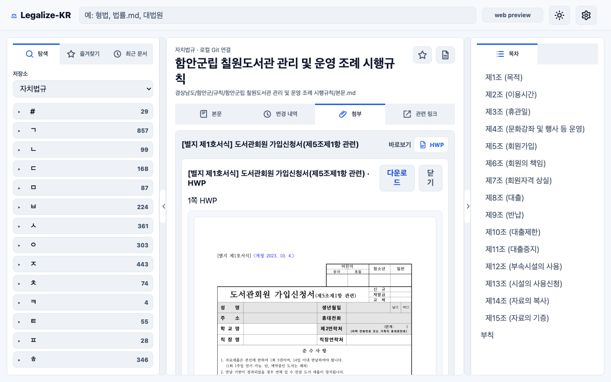
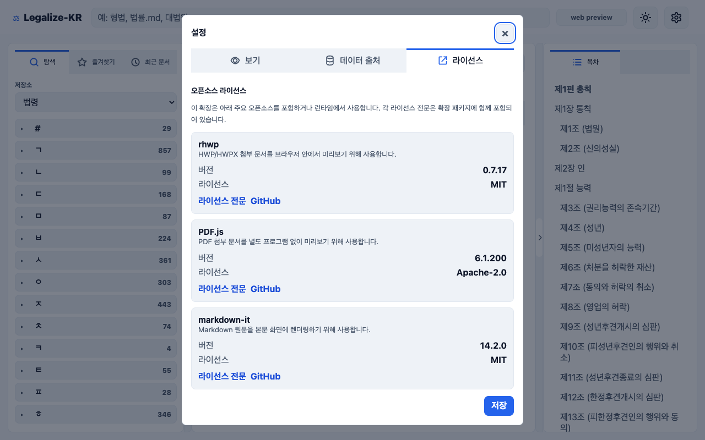

repository
저장소 선택

법령, 판례, 행정규칙, 자치법규 저장소를 전환하며 문서를 탐색합니다.
chrome extension
Legalize-KR Viewer는 법령, 판례, 자치법규, 행정규칙 Markdown Git 저장소를 브라우저에서 읽고 변경 이력을 비교하는 읽기 전용 Chrome Extension입니다.

법령, 판례, 행정규칙, 자치법규 저장소를 전환하며 문서를 탐색합니다.

Markdown 본문, frontmatter, 조문 목차를 한 화면에서 읽습니다.

Git 이력을 개정 흐름으로 확인하고 비교할 두 버전을 선택합니다.

선택한 두 버전 사이에서 바뀐 조문을 나란히 비교합니다.

국가법령정보센터의 HWP, HWPX, PDF 첨부를 브라우저 안에서 엽니다.

보기 설정, 데이터 출처, 오픈소스 라이선스 정보를 확인합니다.